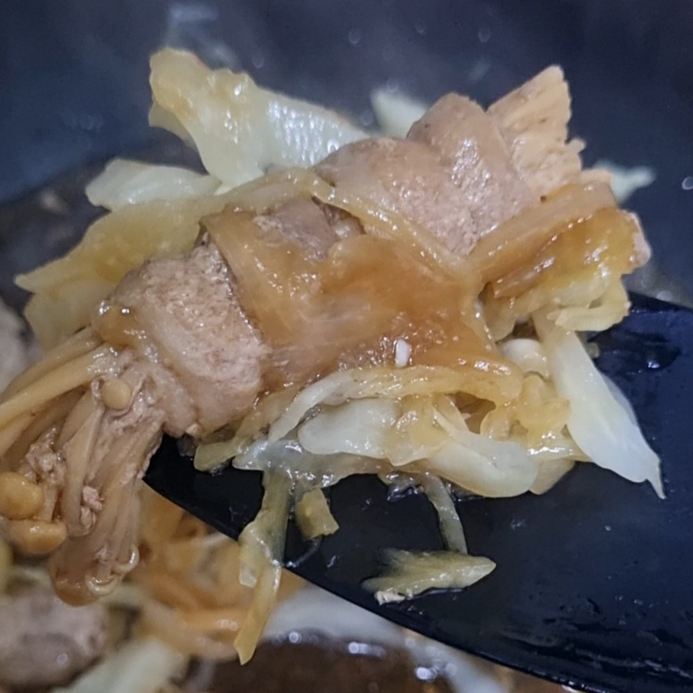

Cooking
As a person who grew up in a culture where eating is integrated into everyday interactions, be it professional or private, as well as growing up in an environment where people love to experiment and cook new dishes, cooking is definitely one of the few hobbies that I take time to do most days of the week.
Background
Malaysia is a multicultural country, mainly consisting of Chinese, Malays, and Indians; thus, allowing a varirety of dishes to be shared across cultures and races among citizens alike. Furthermore, Malaysia was conquered by the West throughtout history, mainly by Great Britain; hence, many western fusion dishes are presented and cemented into everyone's daily lives.
My parents along with other family members spent their young adulthood in the UK. Thus, they have come to appreciate many western cuisines as well. My parents would tell me their daily lives and annecdotes during their university years. My mother specifically learned how to cook from both my aunt (her older sister) and her many foreigner friends. Throughout my childhood and teenage years, she would describe the details of dishes when we were having a meal.
Additionally, my oldest sister, who is 9 years older than me, enrolled into culinary arts for her diploma, a career which she still pursues to this day. Therefore, starting from the age of 9, I have helped her around the kitchen whenever she was cooking and developing new recipes, which I enjoyed. From this experience, I was "trained" by my sister on cooking techniques.
All of these experiences accumulated have enabled my passion for cooking and food in general. In my free time, I would look aroud the grocery store to find items on discount and challege myself to make a new or unfamiliar dish regularly.
Image Gallery
Experiment - high fibre + low calorie meal
Braised meat with cabbage and mushrooms
English inspired simple breakfast
Stir fried cuttlefish with meat and mushrooms
Radish soup with eggs and noodles at the side

Enoki mushrooms wrapped with pork slices
Malaysia Wan Tan Mee with homemade Char Siu